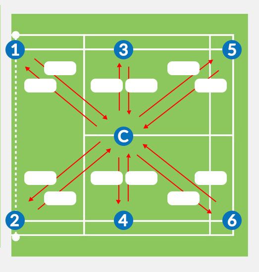

Details
First Name
Last Name
Age
Sex
Male
Female
Other
District
Colombo
Gampaha
Kalutara
Kandy
Matale
Nuwara Eliya
Galle
Matara
Hambantota
Jaffna
Kilinochchi
Mannar
Mullaitivu
Vavuniya
Puttalam
Kurunegala
Anuradhapura
Polonnaruwa
Badulla
Monaragala
Ratnapura
Kegalle

0
0
0
0
0
0
0
0
0
0
0
0